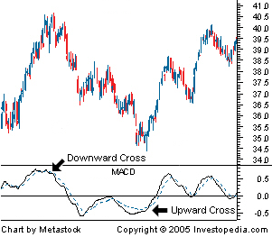

A trend-following momentum indicator that shows the relationship between two moving averages of prices. The MACD is calculated by subtracting the 26-day exponential moving average (EMA) from the 12-day EMA. A nine-day EMA of the MACD, called the "signal line", is then plotted on top of the MACD, functioning as a trigger for buy and sell signals.
There are three common methods used to interpret the MACD:
1. Crossovers - As shown in the chart above, when the MACD falls below the signal line, it is a bearish signal, which indicates that it may be time to sell. Conversely, when the MACD rises above the signal line, the indicator gives a bullish signal, which suggests that the price of the asset is likely to experience upward momentum. Many traders wait for a confirmed cross above the signal line before entering into a position to avoid getting getting "faked out" or entering into a position too early, as shown by the first arrow.
2. Divergence - When the security price diverges from the MACD. It signals the end of the current trend.
3. Dramatic rise - When the MACD rises dramatically - that is, the shorter moving average pulls away from the longer-term moving average - it is a signal that the security is overbought and will soon return to normal levels.
Traders also watch for a move above or below the zero line because this signals the position of the short-term average relative to the long-term average. When the MACD is above zero, the short-term average is above the long-term average, which signals upward momentum. The opposite is true when the MACD is below zero. As you can see from the chart above, the zero line often acts as an area of support and resistance for the indicator.
{kind=link}